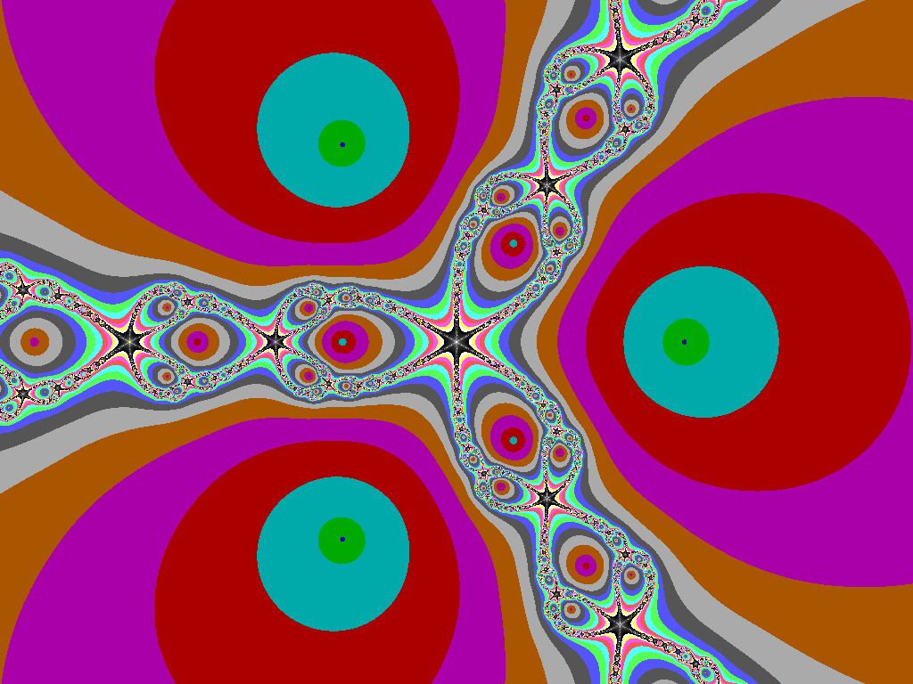
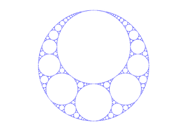
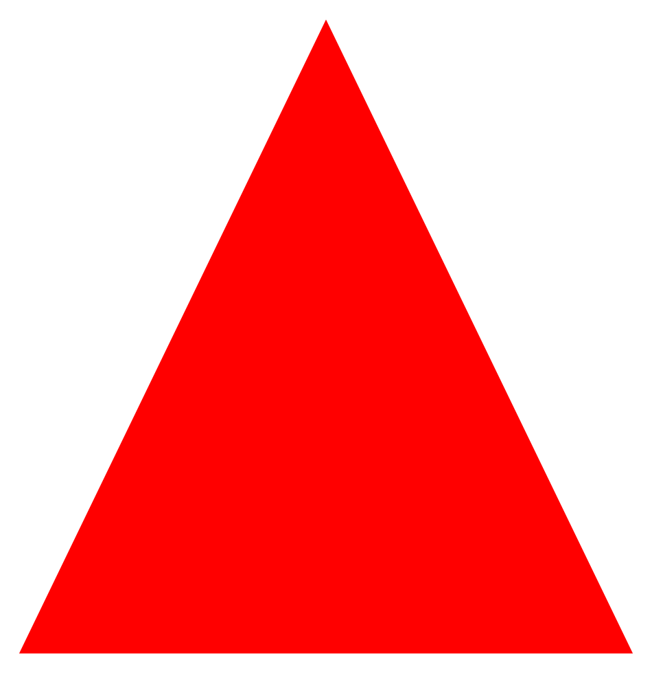
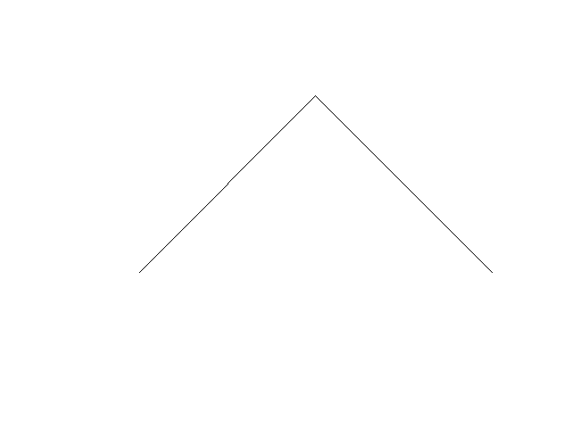

What a fractal actually is
A fractal is usually a pattern that keeps revealing detail when you zoom in. That can mean exact self-similarity, statistical self-similarity, or a recursive rule that generates a shape too rich to summarize at one scale.
A field guide to infinite detail, recursion, and the mathematics that makes shapes feel alive.
Fractals are what happens when a simple rule refuses to stay small. Repeat a transformation, feed its output back into itself, and detail keeps emerging at every scale. Some fractals come from geometry, some from probability, some from complex numbers, but the core idea is always the same: recursion creates structure faster than intuition can keep up.
A fractal is usually a pattern that keeps revealing detail when you zoom in. That can mean exact self-similarity, statistical self-similarity, or a recursive rule that generates a shape too rich to summarize at one scale.
The math is brutally simple and brutally powerful: define a state, transform it, and repeat until a stopping condition or a visible limit appears.
z(n+1) = z(n)^2 + c x(n+1) = f(x(n)) state(n+1) = rule(state(n))
Small changes to the rule, the initial seed, or the parameter c can radically change the image. That sensitivity is what turns deterministic math into something that feels organic, unstable, and alive.
Fractals show up in computer graphics, procedural art, terrain generation, antenna design, signal analysis, chaos theory, and anywhere a natural-looking structure needs to come from a compact algorithm.
These are the families rendered in the project. Each one starts from a different rule, but all of them lean on iteration, geometry, and a little obsession.

The poster child of escape-time fractals. Every pixel asks how fast it escapes under a quadratic recurrence.
Wikipedia
The same complex dynamics, but the constant changes and the shape becomes a map of stability and chaos.
Wikipedia
Newton's method becomes a color-coded basin map when each pixel iterates toward a root in the complex plane.
Wikipedia
Circle packing pushed until every gap wants another circle. Classical geometry, but recursive and relentless.
Wikipedia
Recursive subtraction: remove the middle and the void itself becomes the design.
Wikipedia
Grammar-based recursion: rewrite symbols, turn angles, and let a string become geometry.
WikipediaMost fractals in this project are built from one of three engines: escape-time iteration, recursive subdivision, or an iterated function system. The viewer turns those ideas into live geometry so you can drag, zoom, and watch the scale reveal the structure.
escape-time: z(n+1) = f(z(n), c) subdivision: shape(n+1) = split(shape(n)) IFS / L-system: state(n+1) = rewrite(state(n))